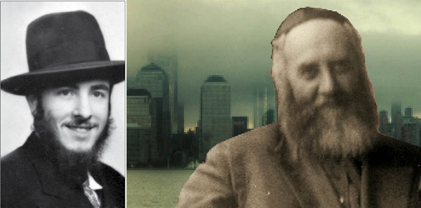

יוסף גולדשטיין
הרב יוסף גולדשטיין ע”ה, היה מהבחורים שחבשו את ספסלי הישיבה ב–770 בשנות הנהגתו של אדמו”ר הריי”צ. במסגרת שנים אלו זכה לראות מקרוב את הרבי הריי”צ ברגעים מיוחדים, כמו גם לשוחח ולפעול יחד עם הרמ”ש, הלא הוא הרבי מה”מ שקירבו בהארת פנים • ‘בית משיח’ קיבל מבני משפחתו תמליל קלטת של זכרונותיו המרתקים, ובהם סיפ
הרב יוסף גולדשטיין ע”ה, היה מהבחורים שחבשו את ספסלי הישיבה ב–770 בשנות הנהגתו של אדמו”ר הריי”צ. במסגרת שנים אלו זכה לראות מקרוב את הרבי הריי”צ ברגעים מיוחדים, כמו גם לשוחח ולפעול יחד עם הרמ”ש, הלא הוא הרבי מה”מ שקירבו בהארת פנים • ‘בית משיח’ קיבל מבני משפחתו תמליל קלטת של זכרונותיו המרתקים, ובהם סיפורים המתפרסמים כאן לראשונה • בחלק הראשון מובא סיפור הדפסת כרטיסי חלוקת המשניות לטיהור רוחני של אוויר העולם, בבית הדפוס של אביו, ועוד שלל סיפורים מרתקים

היה זה בשנת תש”ב, בתקופת מלחמת העולם השניה. המצב היה איום ונורא. הרבי הריי”צ הודיע שיעשו הגרלה לחלוקת המשניות כדי לחזור עליהן לטיהור האויר. אני זוכר שזכיתי לראות בעיניי, איך שהרבי הריי”צ יושב למעלה במרפסת ומשנן משניות בעל פה.
לא ברור אם בפועל ערכו הגרלה או שכל אחד רשם על גלויה איזו מסכת הוא בחר, או שבגלויות כבר נרשמו שמות המסכתות שחולקו על ידי הגרלה. בכל אופן החלוקה הקיפה את כל הש”ס.
הרבי קיבל את ההוראה הזאת ראשון. הוא קיבל את הידיעה מהרבי הריי”צ, ונתן לי הוראה להכין את הכרטיסים.
היה זה לפנות ערב. עמדתי בחזית של 770, והרבי ראה אותי וקרא לי. הוא ביקש ממני לנסוע במהירות לבורו פארק כדי שאבי - שבביתו הייתה מכונת דפוס - ידפיס את הכרטיסים. עלי למהר בחזרה עם הכרטיסים המודפסים. זו הייתה הזמנת בזק שהייתה צריכה להתבצע במשך הלילה. זה היה חייב להיעשות. באותה עת ישנתי בפנימיה למטה ב–770.
אמרתי לרבי: כעת אמצע הלילה, כיצד אני אמור לבצע זאת? ענה לי הרבי: בכל אופן ולמרות הכל.
נאלצתי ללכת הביתה ולהראות לאבא שלי את המתווה, המלל, וכל הטקסט של הכרטיס (היה זה בפורמט של גלויה). אבי הסתכל ואמר שההזמנה תוכל להיות מוכנה למחרת, אולם אני אמרתי לא לא לא, זה חייב להיות מוכן הלילה! פניתי אליו בכבוד על פי כל כללי הלכות כיבוד אב ואם, אך הפצרתי בו שיעשה זאת מיידית - והוא עשה זאת!
כשהבאתי את הכרטיסים לרבי, הדיו עדיין היה רטוב ממכבש הדפוס.
בחזרה לכרטיסים המודפסים - הבאתי אותם בחזרה מאוחר והשארתי אותם במשרד (של ‘המרכז’) כשהרבי טרם היה נוכח במשרד. הוא קיבל אותם רק מאוחר יותר.
אין לך דבר העומד בפני הרצון
למחרת עמדתי ליד 770 כאשר הרבי עבר. הוא ניגש אלי והודה לי במילים “א גרויסען יישר כח (= יישר כח גדול). הרבי הוסיף ואמר: ר’ יוסף, זעסטו! ראה! אין לך דבר העומד בפני הרצון, אז מען וויל מיט אן אמת קען מען אלץ אויפטאן” (=כאשר רוצים עם האמת, אפשר לפעול הכל).
דרך אגב, גם הפתקיות הקטנות שהם רצו להדפיס - “לאלתר לתשובה לאלתר לגאולה” - הודפסו על ידי אבי. הבחורים היו מדביקים אותם בכל מקום, על עמודים ועל חלונות ובכל מקום. הפירסום הראשון היה על ידי הפעולה של אבי, בכל אופן, שיהיה לו זכות למעלה.
מחזה שנחקק בזכרון לעולם
הרב אברהם וויינגרטן ע”ה ואני היינו בחדר שינה של הרבנית הזקנה מרת שטערנא שרה, הסמוך לחדרו של הרבי הריי”צ. בשעת התקיעות פתחו את הדלת כדי שהרבי שישב בחדר יחידות, שם התפלל, יוכל לשמוע היטב את התקיעות. היה כל כך צפוף עד שלא יכלו להכניס אפילו מחט. הצלחנו אפוא להגיע עד הדלת.
כשנכנסתי מהכניסה ההיא, מצאתי את עצמי עומד ממש מול שולחן הכתיבה של הרבי, וצפיתי ברבי לוקח את הטלית ולובש אותה (כמו שרואים את התמונות של הרבי בערב יום כיפור שמחזיק את הטלית כמו מרובע). וזה בדיוק מה שהרבי הריי”צ עשה - עשה את הטלית כמו אוהל, וקרא את פסוקי “מן המיצר” בקול רך מאוד. כשהסתכלתי על החלק העליון של טליתו, ראיתי שהיא לגמרי רטובה מזיעה ומדמעות. כולם בסביבה בכו בדמעות שליש ממש. אני, למרות גילי הצעיר, בחור רך בשנים שבדרך כלל לא בוכה בציבור, כשראיתי שכולם בוכים - ואכן, כל הציבור בכה - בכיתי אתם ביחד! העובדה שהייתי מול הרבי היה פלא פלאים, זה מחזה שנחקק בזיכרון לעולם; אי אפשר לשכוח מחזה כזה.
הרב בערל ריבקין היה בעל התוקע והרבי הריי”צ היה המקריא, אבל הוא לא קרא בפיו, רק סימן עם אצבעו הק’ למילה של התקיעה, ולפי אורך הזמן שאצבעו נחה על המילה, כך בעל התוקע המשיך לתקוע את הקול. כשהגיע ר’ בערל לתרועה, השאיר הרבי את אצבעו הקדושה על המילה בלי להורידה, ופניו של ר’ בערל הפכו אדומים כסלק מהמאמץ!
אולם, ר’ בערל שכבר ידע את אשר לפניו, שאף אויר רב לריאותיו לפני כן… (גם בתקיעה והשברים הרבי החזיק את האצבע על המקום במשך זמן ניכר). רק כאשר הרבי הרים את אצבעו, הפסיק.
אשרי עין ראתה זאת.
אסירת תודה
כשהייתי ‘תמים’ (בשנות תש”ב–תש”ה), הרבי התגורר ב–346 שדרת ניו יורק, הייתי מביא דברי מכולת מהרבנית נחמה דינה אל ביתו של הרבי. בדרך חזור הייתי מביא את בקבוקי החלב הריקים מחברת בלסם (זו היתה חברת החלב הכשרה היחידה אז). לקחתי אתי עגלה קטנה בה הייתי ממלא את המצרכים.
הרבנית היתה מזמינה אותי לחדר ההתוועדויות של הרבי הריי”צ, שם עמד ארון ועליו היתה מונחת מנורת החנוכה של הרבי. המנורה היתה מוצגת שם במשך כל השנה. בארון היתה מגירה, והרבנית נחמה דינה היתה פותחת, מכניסה לשם את שתי ידיה, ובעדינות מרוקנת את מה שהיה בידיה לכיס המעיל שלי. היא תמיד הודתה לי. כאשר חזרתי ל–770, חילקתי את הסוכריות לכולם וזיכיתי את הרבים.
איך הצלחתי לקבל את תפקיד נער המשלוחים? אני ישנתי בבנין של 770, והרב בערל חסקינד אמר לה שיש בחור בבנין. היא ידעה שהרב חסקינד נותן בי אימון, ולכן סמכה עלי.
בקודש פנימה עם בקבוקי חלב!
פעם אירע שהבאתי את הבקבוקים הריקים מדירתו של הרבי ב–346. העובדת במטבח לא רצתה שהם יישארו במטבח שכן חששה שהבקבוקים יפריעו, לכן היא סימנה לי לכיוון אדן חלונה של הרבנית הזקנה. (החלון פנה החוצה לעבר איסטרן פארקוויי, והוא היה רחב כמו מדף, אף מספיק רחב כדי לשבת עליו). היא אמרה: שים אותם שם כדי שלא יפריעו. גם היא וגם אני לא ידענו שכדי לעבור דרך החדר, הייתי חייב לעבור את חדר ה’יחידות’. לא חלמתי שהדלת תהיה פתוחה בזמן הזה, בדיוק כשעברתי. הלכתי בדרכי להניח את הבקבוקים במקום שהעובדת ציינה, ו….הנה הרבי הריי”צ יושב, עסוק בכתיבה בלי להרים את עיניו ולו פעם אחת!
חבל שלא עצרתי במקום, אך בכל זאת, משום מה, נכנסתי פנימה… ואז הרבי הריי”צ הרים את עיניו וראה אותי ואמר לי “שלום, מה שלומך?” הייתה זה עת רצון.
לשים לב להדלקת נרות של הרבנית
זכורני שפעם, בערב חג, הייתי למעלה במטבח של הרבנית, ומנורת השבת שלה עמדה על השולחן. ר’ שלום פויזנר ע”ה שהיה נוכח במקום, אמר לי: שים לב, הסתכל טוב, זה יבוא לך לשימוש. לשים לב לפרטים: כיצד היא מדליקה, כיצד היא מברכת, כמה זמן היא מכסה את עיניה. שמתי לב שהיא פונה למזרח (היא פנתה לכיוון שדרת קינגסטון).
אוזן שומעת
שלום העכט, ניסן גורדון ואני ישבנו פעם בבית המדרש. היה זה ב’בין הזמנים’, בערך אחרי מנחה. סיימנו ללמוד ודברנו ענינים שלא חייבים להיאמר דווקא בבית מדרש.
הרבי (הרמ”ש) נכנס ל’זאל’, לבוש חליפה קצרה וחבוש מגבעת לבנה. הוא ידע שבשעה זו אנו מתפללים מנחה. הוא התיישב על הספסל מתחת לשעון הגדול ליד הדלתות הכפולות. הוא נהג לשבת בין הבחורים; תמיד היה מעורב עם הבריות (לפעמים הוא היה נכנס באמצע היום, מוציא גמרא ומתיישב, מניח את ראשו על ידו ועיניו הק’ היו סורקות את כל המסכת). אז דחפתי את שלום העכט וישראל גורדון באומרי: זהירות, הרמ”ש פה.
והרבי הגיב ואמר (כמדומני בשפה האנגלית): “כן, ואני שומע כל מה שאתם אומרים…”
כוס תה מהשוויגער
לאחר שנת תש”י, הרבנית נחמה דינה ידעה שהרבי היה שוהה לפעמים באוהל במשך יום שלם בטרם סעד את לבו. שמעתי שהרבנית חיה מושקא התלוננה בפני אמה שבעלה לא אוכל ולא שותה. אז הרבנית נחמה דינה הייתה שולחת כוס תה למטה עם ר’ משה טלישבסקי. ר’ משה נקש בדלת והרבי ענה. ר’ משה אמר: “השוויגער ביקשה להעביר את זה”.
הרבי ענה לו: “זה החלק הראשון של השליחות, כעת תמלא את החלק השני”.
“מהו החלק השני?, התפלא ר’ משה.
“תשתה עד תום…” השיב לו הרבי.
מָשְׁכֵנִי אחריך
את הסיפור הבא שמעתי:
פעם אירע שהרבי הריי”צ ביקש את ר’ זלמן גורארי’, ששהה באותה עת על המדרגות הירוקות, שם שררה צפיפות רבה. אך הוא סימן כי אינו יכול למלא את רצון הרבי בגלל הצפיפות האיומה.
פתאום יצא הרבי מדירתו של הרבי הריי”צ ואמר: “השווער ביקש את זלמן גורארי’ ואיש לא זז”, ואז התכופף הרבי מעל האנשים, משך את ר’ זלמן בגארטעל והעלה אותו - כך מספרים - מעל ההמון.
פתחו לי שערי צדק
בשבת מברכים אייר באתי ל–770 בשעה 7:30 בבוקר. בית המדרש היה אמור להיות פתוח אך הוא היה סגור. נקשתי בדלת, והיא נפתחה בפתאומיות. הסתכלתי והיה זה הרבי! הוא הגיע מוקדם יותר לפניי. כל מה שהצלחתי להגיד היה “סליחה”. זו לא הדלת היחידה שהרבי פתח לי, ובמשך השנים פתח הרבי בעבורי עוד דלתות רבות. דור לדור ישבח מעשיך.
יחס אישי לילדים
הייתה תקופה שגרנו ב–346 שדרת ניו יורק, שתי קומות מתחת לדירתם של הרבי והרבנית (הרבי התגורר בקומה הרביעית, ואנחנו בקומה השניה). ילדיי הקטנים ארהל’ה, שלום בער ויצחק היו רוכבים על תלת–אופניהם בקידמת הבנין. הם רכבו במעגל והסתובבו אחד אחרי השני כמו קרוסלה. הרבי היה פותח את דלת הבנין כדי לצאת, וכשהיה רואה את הילדים היה מנפנף לעברם בידו כמו בהתוועדות.
אני זוכר שהייתי מסתכל מחלון דירתנו בקומה שניה, ורואה את הרבי עובר ועושה את התנועה המוכרת שלו עם ידו.
אם היינו מגיעים לבנין באותה שעה, היינו עולים ביחד במעלית. תמיד עליתי בדממה ומעולם לא פציתי את פי. היה זה בעקבות אירוע שבו הרבי ראה אותי מגיע; הרבי מסיבותיו שלו לא רצה לשוחח באותה שעה, אז הוא החל לעלות במדרגות כשהוא מדלג במהירות.
הרמ”ש הצטרף לבחורים בריקודם
היה זה בהתוועדות של הרבי הריי”צ. הרב בערל בוימגרטן, הרב אברהם וויינגרטן ויבלחט”א הרב שלום מענדל סימפסון ואני נכחנו אז בהתוועדות. עמדנו מאחורי הרבי (הרמ”ש) בעוד הרבי הריי”צ ישב בראש השולחן. הרבי הורה לנגן את הניגון “קול דודי”, והחלו לנגן. הרבי הריי”צ סימן בידיו הק’ תנועת ריקוד. כשהרבי ראה את תנועת היד של הרבי הריי”צ, הוא קם והצטרף לריקוד. הוא שם את ידיו הק’ על הכתפיים של התמימים המעטים –ששה או שבעה - שהיו במקום ונעמדו לרקוד לצלילי הניגון. אני הייתי אחד מאלה שזכו.
בכלל, תמיד השתדלתי להצטופף הכי קרוב לרבי.
‘שיריים’ במפתיע
בסעודת יום טוב: בסעודות יום טוב הרבי הריי”צ לא היה מסיים את כל המנה שהונחה לפניו, אלא רק אוכל כפית אחת או שתיים. כשהיה מסיים את הכמות, היו מסירים את הצלחת ומעבירים אותה בין הקהל. כשהצלחת הגיעה לדלת, היא כבר היתה מרוקנת לגמרי שכן כולם “חטפו שיריים”, בין אם זה היה דג או עוף.
פעם הייתי למעלה, בקומת דירתו של הרבי הריי”צ, והעוזרת יצאה מחדרו הקדוש של הרבי הריי”צ. היא נשאה בידיה מגש עם לחם ומרק כרוב. היה נראה שמישהו שבר או נגס בלחם. היא פנתה כה וכה וראתה שאין איש, ואמרה לי: “סליחה, קח את זה ו”גיי געזונטערהייט” (= לך לבריאות).
ירדתי לבית המדרש וחילקתי לכל הנוכחים מעט מן השיריים. גם כשהיא נתנה לי סוכריות חילקתי לכולם ובכך זיכיתי את הרבים.
הזהירות של הרבי בפסח
אני נזכר בליל חג הפסח. הרבי (הנוכחי) היה זהיר שלא להניח את סידורו או את ההגדה שלו על השולחן. הוא לא אכל מצה בכלל ללא ניגוב שפתיים. אחרי שתיית המרק, הוא היה מנגב את השפתיים עד שהיו יבשות לחלוטין. את המפית איתה הוא ניגב את הפה, הוא לא רצה לשים על השולחן, שכן הוא ישב בנוכחות הרבי הריי”צ וגם כי היה בזה חשש דחשש חמץ. הוא היה מפיל אפוא את המפיות המשומשות מתחת למקום מושבו. במשך הלילה הצטברה ערימת מפיות שהיו בשימושו, ומהרצפה הם הגיעו ישירות… לכיסי, משם העברתי אותם למעטפה ושם מקומן עד עצם היום הזה. כן, זה היה לפני קבלת הנשיאות בתש”י ואני כבר הרחתי….
ומורא רבך …
הרבי תמיד ישב לשמאלו של הרבי הריי”צ, והוא ישב בלי להניע אבר. הוא היה מביט על הרבי הריי”צ ללא תזוזה. קפוא! גם אחרי תש”י הוא ישב והסתכל על הכסא ההוא, והמשיך לשבת בצד שמאל, מביט על הכסא.
בליל הסדר, הוא חיכה וחיכה, ואז לקח את המצה. חיכה וחיכה, ולקח את החריין…
סומך נופלים
שמעתי (אולי על ידי משה גרונר) שפעם אירע שבצפיפות הגדולה מסביב לשולחנו של הרבי הריי”צ, נשברה אחת מרגלי השולחן. הרבי חשש שהשולחן יתמוטט על הרבי הריי”צ, ולכן הוא תמך בשולחן עם ברכו. הוא צלע למשך שבוע, עד שרגלו חזרה לעצמה.
לא שניתי
כשהרבי היה שוהה אצל הרבי הריי”צ לתוך הלילה, הוא היה יורד לאחר מכן להתפלל מעריב לבדו בבית המדרש. בימי הספירה, בעת ספירת העומר, זכיתי לעמוד בפינה ולהתבונן בו, כיצד נגע עם אגודלו באצבעותיו ב”אנא בכח גדולת ימינך”, נוגע על פי הסדר הידוע אצלו. הוא החזיק את שתי ידיו ביחד, והאצבעות נעו מסביב ב”אנא בכח”. יד ימין מעל יד שמאל, יד ימין היתה פתוחה, יד שמאל סגורה, והוא הזיז אצבע אחת, אחר כך שניה, אחר כך שלישית, כידוע ליודעים.
להעיר: את התנועות שהוא עשה בלילה, כשאף אחד לא היה נוכח - בדיוק כך עשה גם כאשר נכחו אנשים, ללא שינוי. באופן ד”לא שיניתי”.
אני הייתי אחראי לכיבוי אורות בבית המדרש. פעמים שנמנעתי מלכבות כי ידעתי שהרבי טרם ירד, אז הייתי משאיר את אורות המנורה בעמוד דולקים. המראה היה מרהיב. הכל חשוך, ורק הרבי עמד בצלו של המנורה הקטנה ומתפלל במתינות ובשקט כדרכו בקודש.
המשך בשבוע הבא אי”ה